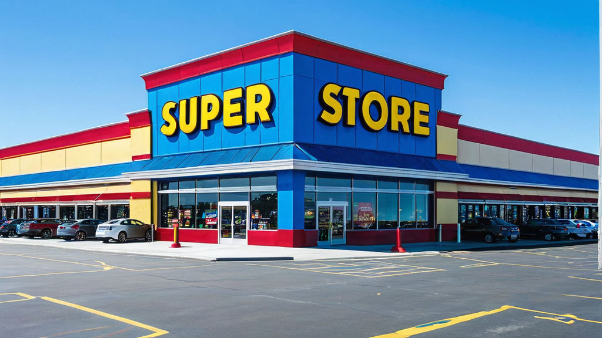

Tableau tools was utilized for Superstore sales analysis is to gain actionable insights from the sales data.
Tableau allows for visually appealing and interactive data exploration, enabling users to identify trends,
patterns, and correlations within the sales data. This analysis can help optimize inventory management,
improve sales strategies, identify top-performing products, understand customer behavior, and ultimately increase revenue and
profitability for the superstore.

Analyzing the fundraising dataset for Education for All involves examining various aspects such as donation amounts,
donor demographics, fundraising campaigns, and contribution trends. By utilizing data analysis tools,
we can identify patterns, understand donor behavior, and evaluate the effectiveness of different fundraising initiatives.
This analysis helps Education for All make informed decisions about future fundraising strategies, allocate resources efficiently,
and maximize the impact of their efforts in providing education to all. SQL was used to analyse the data.
The aim of conducting a hospital transaction analysis using Power BI is to gain valuable insights and actionable intelligence from the dataset.
This analysis could involve examining various aspects of hospital transactions such as patient demographics, types of services provided, revenue generated,
expenses incurred, operational efficiency, resource allocation, and patient outcomes. The ultimate goal is to improve decision-making processes,
optimize resource utilization, enhance patient care quality, streamline operations, and ultimately contribute to better overall hospital performance and patient satisfaction.
Mekko is an Automobile company across the globe. As the company grows, it's harder for the management to stay updated on customer info like demographics and preferences.
This makes it tough to improve sales and satisfaction, as raw data is hard to analyze for insights and strategic decisions, causing missed opportunities.
An Excel dashboard changes the game. It summarizes and visualizes data, helping management spot trends, understand customer preferences by demographics, and make informed decisions effortlessly.
Analyzing an emergency room dataset using Tableau allows for a comprehensive examination of various aspects such as patient demographics,
arrival times, chief complaints, treatment outcomes, and resource utilization. Through interactive visualizations,
trends and patterns can be identified, enabling hospitals to optimize emergency room workflows, improve patient care, reduce wait times,
allocate resources efficiently, and ultimately enhance the overall effectiveness of emergency medical services.
Analyzing the Texas Electronics Company dataset using Power BI offers valuable insights into sales performance, product trends, customer behavior,
and operational efficiency. By visualizing key metrics such as sales revenue, profit margins, inventory levels, customer demographics, and geographic distribution,
Power BI enables the company to make informed decisions. This includes identifying top-selling products, targeting specific customer segments,
optimizing inventory management, and devising effective marketing strategies to drive growth and profitability for the Texas Electronics Company.
Analyzing the Redox Airlines dataset using Excel provides an opportunity to gain insights into various aspects of the airline's operations,
including passenger demographics, flight routes, ticket sales, and revenue trends. By summarizing and visualizing the data through Excel's features,
such as pivot tables, charts, and graphs, the analysis can reveal patterns, identify opportunities for route optimization, assess customer preferences,
and improve operational efficiency. Excel's capabilities allow for effective decision-making to enhance the overall performance and competitiveness of Redox Airlines in the aviation industry.
Analyzing Nestle product sales data using Power BI allows for a comprehensive examination of sales performance across different product categories,
regions, and time periods. By leveraging Power BI's interactive dashboards and visualizations, Nestle can identify top-selling products, understand customer preferences,
track market trends, and optimize inventory management. This analysis enables Nestle to make data-driven decisions, allocate resources effectively, and
develop targeted marketing strategies to drive sales growth and maximize profitability for its product portfolio.
Analyzing Xshop's online food delivery services data using Tableau facilitates a thorough examination of various aspects such as customer orders,
delivery times, popular cuisines, customer demographics, and delivery locations. Through interactive dashboards and visualizations,
Tableau enables Xshop to identify trends, optimize delivery routes, improve service efficiency, and enhance customer satisfaction. By leveraging insights from the analysis,
Xshop can tailor its offerings, target specific customer segments, and implement strategies to enhance the overall delivery experience, ultimately driving growth and success in the online food delivery market.
TopBase, a telecom provider, is facing increasing customer churn.
In today's competitive telecom landscape, understanding and reducing churn is crucial.
We aim to uncover the challenges Telcos face in retaining customers and develop strategies to minimize churn and foster lasting loyalty for sustainable growth.
Tableau visualization tool was used to analysis the dataset and creation of dashboard to visualize the insights.